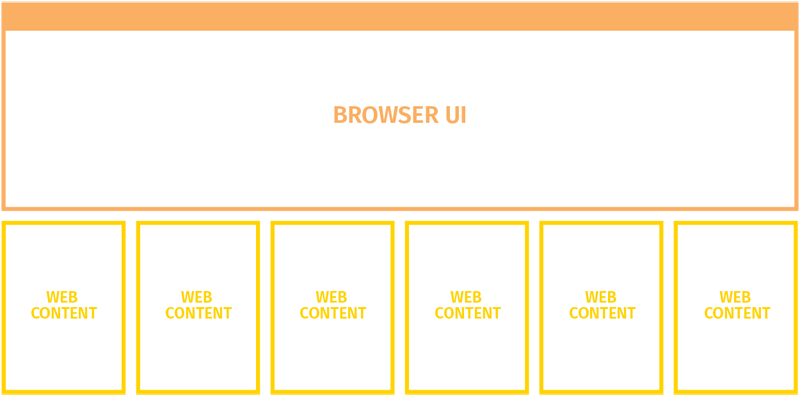

Bleeding Edge Web: August 2016
Announcements
News from the Bleeding Edge
— Brian Moeskau (@bmoeskau)
Test Automation Best Practices
Begin with the End in Mind (slides)
— Leo Laskin (@leolaskin)
Thanks to our venue sponsor:
Thanks to our food sponsor:
News from the
Bleeding Edge
Browser Pop Quiz
Last version check — July 20, 2016:
Browser Pop Quiz
As of August 24, 2016:
Firefox 48
Last but not least... multi-process support!
- Phase 1: split between UI process and content process
- Add-on support slated for versions 49 & 50
- Touchscreen, accessibility and RTL support in 51
Firefox 48
Last but not least... multi-process support!
- Phase 2: support multiple content processes
- Targeting "first half of 2017"
- Out of process add-ons to follow after that

Edge 14 (14393)
Release Notes
- EdgeHTML 14 released with Windows 10 Anniversary Update
- 95% ES2015 compatibility
- 100% HTML5 accessibility support
- Rollout to 350 million Win 10 devices began Aug 2
Edge 14 (14393)
This is a definitive nail in IE's coffin.
ES2015 compatibility:
Opera
- Opera 39 (Chromium 52) was released August 2nd
- Based on Chromium since Opera 15 (July 2013)
- < 2% global usage, even less in N. America
Opera
- Most interesting releases are user-facing UI features
- Dev features simply track Chromium
So... I think it's time we make it official...
Browser Pop Quiz
As of August 24, 2016:
Browser Pop Quiz
As of August 24, 2016:
Bonus: Safari Technology Preview 11
Released August 17 — Release Notes

Aurelia 1.0
- Aurelia is a JS framework on par with Angular, Ember, etc.
- All the stuff you expect (data binding, routing, components, etc.)
- 1.0 released July 27th after years in development
- Supported by Durandal, large dedicated team

Bootstrap 4 alpha 3
- Released July 27th — over 1,200 commits
- Alpha 2 was released December 8th, 2015. Hmmm.
- Overhauled grid system and flexbox support
- Lots of form improvements
Docker 1.12
- Released July 28th
- Docker for Mac & Windows are officially production-ready
- "The easiest way to use Docker on your dev machine"
- Download now and try it out
After running npm install webpack-dashboard:
- The core of the Chakra JS engine in Edge
- Linux / OSX support announced at NodeSummit on July 27th
- Why is this awesome? Choice of Node VMs (in theory)
Wait, Dart is Still a Thing?
Apparently so!
And now for something completely different...
Learn to code from juvenile web experiments
These tiny solar cells won’t produce much power individually, but what they lack in
energy density, they will make up for in ubiquity. They will be everywhere.
- Photovoltaic cells 1 micrometre thick
- Created by scientists in South Korea
- Can wrap around a 1.4 millimeter radius

Thanks!
 ←
→
←
→
/
#